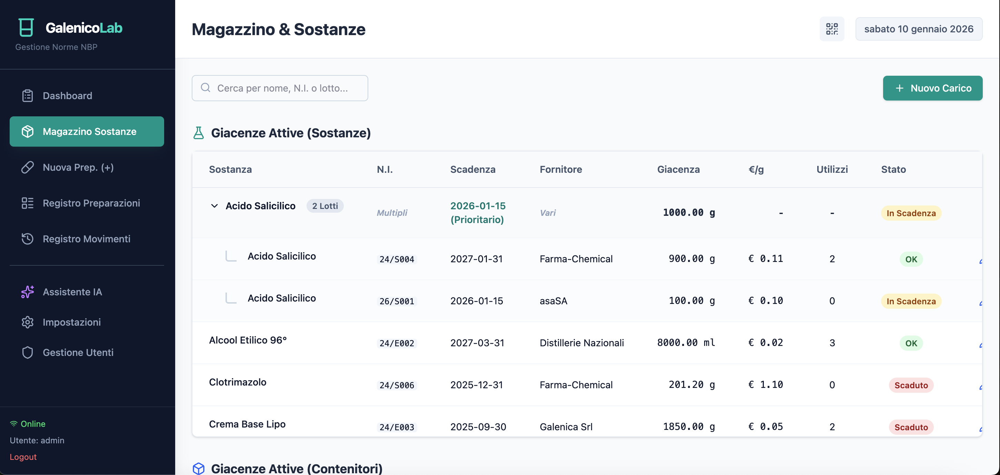
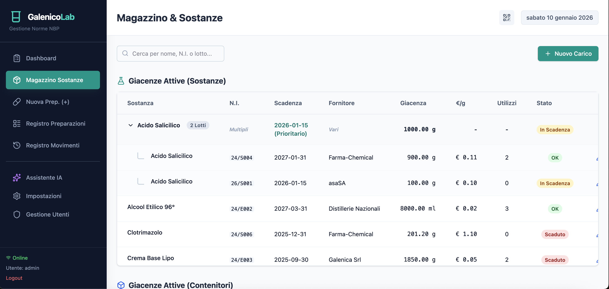
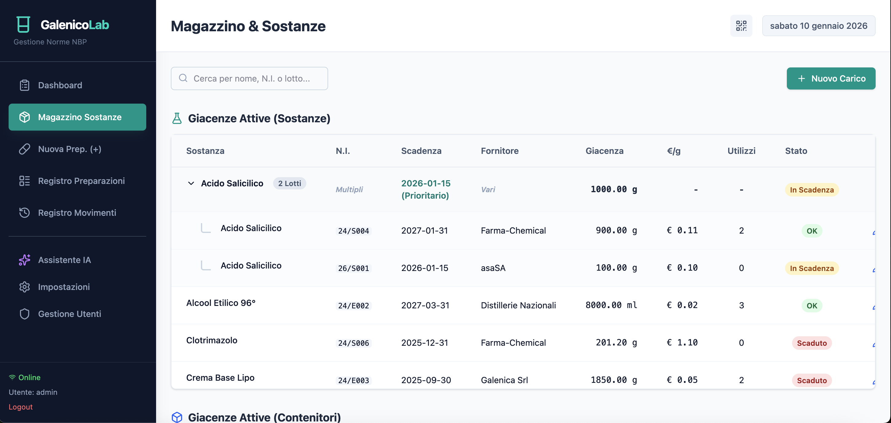

Abbandona la carta e i fogli di calcolo. Gestisci sostanze, tariffazione, etichette e registri ufficiali in un'unica piattaforma cloud progettata per i farmacisti moderni.

Strumenti potenti per semplificare ogni aspetto della galenica.
Tracciabilità completa delle sostanze. Carico/scarico automatico e certificati sempre a portata di mano.
Guida passo-passo nella creazione di Magistrali e Officinali con calcoli automatici.
Calcolo automatico del prezzo secondo la Tariffa Nazionale. Gestione onorari e IVA.
Generazione PDF etichette a norma. Formati personalizzabili, avvertenze automatiche e QR code.
Storico completo delle preparazioni e dei movimenti. Esporta i registri per i controlli ASL in un click.
Un esperto virtuale sempre disponibile per rispondere a dubbi su formulazioni e normativa.